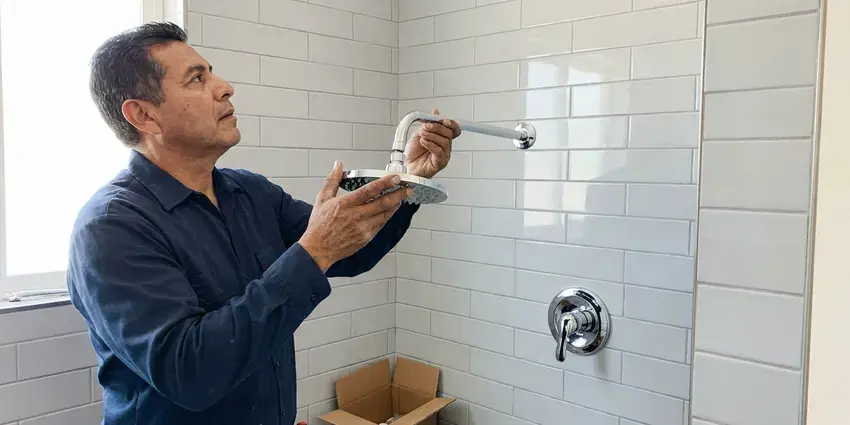

Urinal Installation in Saratoga Springs, UT
Licensed urinal installation in Saratoga Springs, UT, from sensor valves to waterless fixtures.
- Sensor and Manual Flush Valves
- Licensed & Insured
- After-Hours Installs
- Workmanship Guaranteed

Building a Restroom in Saratoga Springs, UT?
We pull permits and schedule inspections for new urinals.
Flush Valve, Sensor and Waterless Urinals in Saratoga Springs, UT
BPK Plumbing handles both flush valve and waterless urinals. Flush units need a 3/4 inch supply and a matched flushometer, and waterless units need just a drain and a cartridge. Maintenance is the real difference. We explain both before you choose.
Our expertise includes:
- Rough in waste, vent and supply lines
- Replace high-flow urinals with 0.5 or 0.125 gallon models
- Fit sensor flush valves, hardwired or battery

Additional Bathroom Plumbing Services in Saratoga Springs, UT
From toilets to showers, our bathroom plumbing team in Saratoga Springs, UT handles repairs, installs, and upgrades with tidy, code-compliant work.


Customers
Why Choose BPK Plumbing for Urinal Installation in Saratoga Springs, UT?
Water savings pay for the upgrade. Swapping a 1.5 gallon urinal for a 0.125 gallon model in a restroom that sees a few hundred flushes a day saves tens of thousands of gallons a year, and the flushometer swap alone often pays back fast. We can estimate your savings.
- Durable Setup, New gaskets, stainless bolts and correct outlet seals on every install.
- Inspection Ready, Rough-ins and final sets ready for the inspector the first time.
- Durability, Floor-mounted carriers keep the urinal from loosening for years.
Citywide Coverage
Commercial build-outs keep our crews busy. We often work with GCs on tenant improvements nearby and schedule around the other trades. We keep to the plan.
Experienced Team
Our plumbers set commercial fixtures every week. They have set urinals in stadiums and bars and know when a carrier is tight and a bowl is level. Experience shows in the details.
Safety-First Approach
Water off comes first. We shut the supply to the flush valve at its control stop or the branch valve, open the valve to bleed pressure, and confirm the line is dead before loosening anything. We never work on live lines.
Trusted Certified Saratoga Springs Plumbing Services Professionals
At BPK Plumbing, we take pride in licensed, certified plumbing services throughout Saratoga Springs, UT. Credentials matter in this trade. Every repair, install and maintenance visit follows strict safety and quality rules, and the plumbers doing the work carry recognized industry credentials.
Call Us Now PHCC Plumbing Contractor Recognition
PHCC Plumbing Contractor Recognition Better Business Bureau (BBB) Accreditation
Better Business Bureau (BBB) Accreditation Angi Certified Pro
Angi Certified Pro ISO 9001 Quality Management Certification
ISO 9001 Quality Management CertificationUrinals We Install in Saratoga Springs, UT
Office and Restaurant Urinal Installation in Saratoga Springs
Restaurant restrooms see a lot of traffic in short bursts. Busy bars can see hundreds of flushes a night, so we install valves that recover fast and carriers that stay tight. Vandal-resistant valves are available. Night installs keep you open.

Residential Urinal Plumbing in Saratoga Springs, UT
Home urinals use the same rules as commercial ones. Expect a 2 inch drain, a built-in trap, a vent and a supply sized to the flush valve. Your city may want a permit. We check that first.
Urinal Upgrades and Water Savings in Saratoga Springs, UT
Older urinals often use 1.5 gallons or more per flush. Replacing them with 0.5 or 0.125 gallon models on the existing carrier, and swapping the flush valve to match, cuts water use sharply in any restroom that sees regular traffic. Some utilities offer rebates. We provide the model numbers you need.
Urinal Rough-In for New Restrooms in Saratoga Springs
Tenant improvements need rough-in before the walls close. We space urinals 30 inches apart and 15 inches from side walls, then set carriers and run all the lines. Coordination with the GC is constant. Rough inspection comes first.
Flushometer Urinal Installation in Saratoga Springs
Manual flushometers are still the most common setup. We install Sloan Royal or Zurn AquaFlush valves on a 3/4 inch supply, adjust the control stop for proper flow, and set the vacuum breaker the right distance above the bowl so it protects the drinking water. Handles can go left or right. ADA units need the handle within reach.
Waterless Urinal Installation in Saratoga Springs
Waterless urinals save the most water and need the most discipline. They use a cartridge or a layer of sealing liquid that lets urine pass while blocking sewer gas, and the cartridge has to be swapped on schedule or the restroom starts to smell. Your custodial team needs training. We show them how.
Waterless Urinal Upgrades in Saratoga Springs
Switching to waterless is mostly a fixture swap. The old flush valve comes off, the supply gets capped behind the wall, and the new waterless bowl goes on the same carrier with its cartridge housing tied into the existing drain. Many jurisdictions want a capped supply kept for later. That allows a future change back.

Old Urinal Removal and Replacement in Saratoga Springs
Old urinals come off harder than they went on. Rusted bolts and seized valves often have to be cut, so we protect the tile while working. New gaskets always go in. The flange gets cleaned to bare metal.
Urinal Installation Near Me in Saratoga Springs, UT
Searching urinal installation near me usually means a restroom is down or a build-out is behind. Our crews do commercial work around town every week, so we can usually get a plumber on site within a day to look at the space and price it. You get a written quote.
Property managers use us across their buildings. We track the fixture and valve in each restroom, so repeat visits are quick and parts are right. Service plans are available.
BPK Plumbing at a Glance
- Fully licensed plumbing team covering Saratoga Springs, UT
- Same-day appointments and 24/7 emergency response
- Upfront, flat-rate pricing before work begins
- 4.8-star rated by 470+ Utah customers
Saratoga Springs Map
Saratoga Springs Information
- Population
- 52,532
- Area codes
- Local
- Service area
- Saratoga Springs and communities within 40 miles
- Nearby
- Eagle Mountain, Lehi, Draper, Herriman
Mineral deposits reduce the life of tankless and tank water heaters alike, so regular flushing or descaling is worth the time. A urinal in Saratoga Springs, UT drains cleanly for years when the slope and venting are right, and a tuned flush valve keeps the bowl rinsed.
Expert Services
Call BPK Plumbing for reliable plumbing work done by licensed pros in Saratoga Springs, UT.
Our Specialized Plumbing Services in Saratoga Springs, UT
At BPK Plumbing, you get every kind of plumbing service from one company across Saratoga Springs, UT. From leak detection to full system installs, our team works fast and charges fair prices on homes and commercial properties alike. Here are the core services we offer:


What Happens on a Urinal Job in Saratoga Springs, UT
Here is how a urinal install goes, from site visit to final flush test.
Request a Quote
Call (385) 543-4073 with your restroom layout. We schedule a site visit.
Site Assessment
A plumber checks the carrier, drain and supply and gives you a written price.
Installation
We set the carrier if needed, hang the urinal and connect the flush valve.
Frequently Asked Questions About Urinal Installation in Saratoga Springs
Replacing a urinal on existing lines usually costs $500 to $1,200 with a manual flush valve. New installs that need a carrier and new drain lines typically range from $1,500 to $3,500, and switching to a sensor valve adds $250 to $600 to either job. One price, before we start.
In most cities, for new installs. A replacement on the same lines may count as repair, but anything that adds a fixture or moves a drain is new work that needs a permit and an inspection before the restroom opens. Rules vary by city.
A lot, in a busy restroom. Going from 1.5 to 0.125 gallons saves about 1.4 gallons a flush, roughly 100,000 gallons a year at 200 flushes a day. Waterless units save the rest.
Cracks in the china are the clearest sign. Watch for permanent stains, constant odor, a loose fixture or an old high-flow rating. Upgrading an old bowl saves money.
They can be, with the right maintenance. They save the most water but need regular cartridge changes and good drain slope, or an ultra-low-flow flush model is better. We can talk through both.
The common ones, yes. Sloan and Zurn rebuild kits, outlet gaskets, hanger bolts, vacuum breakers and control stop parts ride on every truck, so most flush valve repairs finish on the first visit. Fixtures get ordered.
Yes, and it is more common than you might think. Most cities allow residential urinals as long as they have a proper drain, trap and vent, and garage or basement bathrooms are the most popular spots because the drain is often close by. A permit may be required.
Flushing action. Washdown units rinse from the rim and drain by gravity, and siphon jet units pull the trap clear with more water. Most new models are washdown.
What People Are Saying About Our Plumbing Experts?

Jessica T.
We were adding a gas range in a kitchen remodel and needed a new line run from the meter. The plumber pulled the permit, ran the pipe through the crawl space, and had it inspected and approved within the week.
Gas Line Repair · South Jordan, UT
James P.
Our restaurant had a slow leak at the hand sink that was rotting the cabinet base. BPK Plumbing came in at six in the morning before prep, replaced the trap and both supply lines, and was packed up before my first cook clocked in.
Commercial Plumbing · South Jordan, UT
Carlos V.
Our house still had galvanized pipe, and upstairs the shower was a trickle. The crew repiped everything in PEX over three days and patched every drywall hole before they left. The pressure difference is night and day.
Repiping · Saratoga Springs, UT
Patricia H.
We had a slab leak that two other companies could not find. BPK Plumbing located it in under an hour with a listening device. They rerouted the line through the attic instead of breaking up the floor, so we kept our kitchen tile.
Slab Leak Repair · Herriman, UTDaniel K.
A pipe burst in the garage ceiling at 11 at night. Someone answered on the second ring, and the plumber was in my driveway about fifty minutes later. He shut off the main, cut out the split section, and had water back on before 2 am.
Emergency Plumbing · Eagle Mountain, UTKevin O.
Before buying our house I paid for a sewer camera inspection. BPK Plumbing found a belly in the line that held standing water about forty feet from the cleanout. We used the video to get the sellers to fix it before closing.
Sewer Camera Inspection · Draper, UT